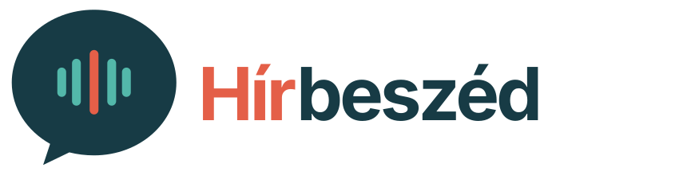

Végleges vizuális alap · 33 mobilképernyő · világos és sötét téma · v1.0
Navigáció és általános kijelölés
Márka, új vagy élő állapot
A korall csak kiemelt jelentésben jelenik meg
Világos
Sötét
Mindkettő